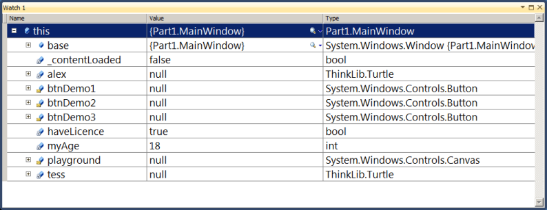
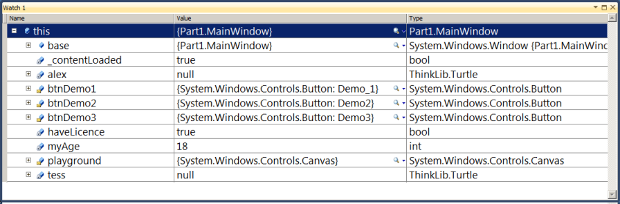
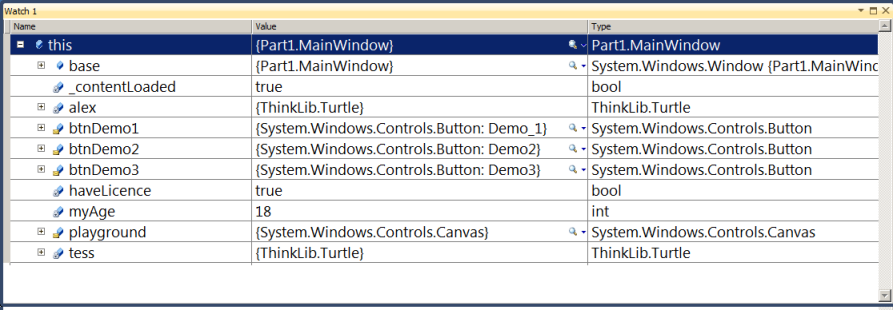
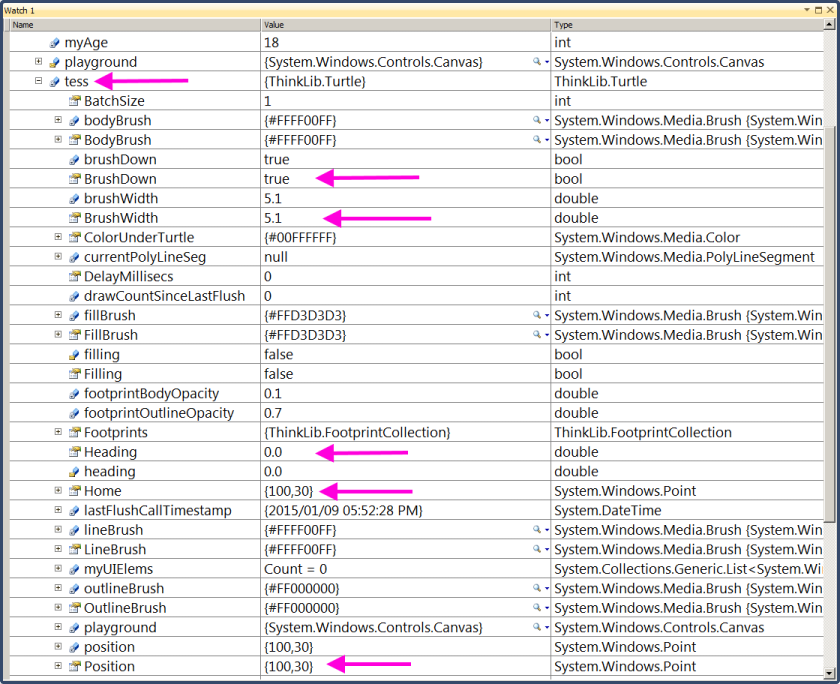
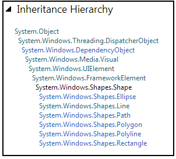

13. Classes and Objects — an Overview¶
We’ve been working with Turtles, Windows, Buttons, and so on. We look a bit deeper under the covers now...
13.1. Creating our objects¶
Remember this first program where we used two turtles? Let’s take another look.
1 2 3 4 5 6 7 8 9 10 11 12 13 14 15 16 17 18 19 20 | public partial class MainWindow : Window
{
Turtle tess, alex; // Define class-level variables to hold references to turtles
int myAge = 18; // Define and initialize some other class-level variables.
bool haveLicence = true;
public MainWindow()
{
InitializeComponent();
tess = new Turtle(playground, 100.0, 30.0); // Create a turtle in the playground.
tess.BrushWidth = 5.1; // Set some properties.
alex = new Turtle(playground, 300.0, 100.0); // Create another turtle.
alex.LineBrush = Brushes.Blue;
alex.BodyBrush = Brushes.Blue;
alex.BrushWidth = 1;
}
...
}
|
The class defines two class-level variables for the turtles we want to use. We’ve also added two other class-level variables with initializers here.
We don’t have to create our MainWindow object ourselves — that is done automatically
for us by WPF when our application starts running.
When our window object is first created it sets aside space within the new object for the variables we have defined. The window also has other built-in class-level variables, some automatically part of every window object, and some from the XAML controls we defined in our GUI front-end.
Part of creating any object involves “setting up its factory defaults”. That is the job of the constructor method of any class (lines 7-17 in this example). But before that method executes, (e.g. if we set a breakpoint before line 9 executes), we can peek into memory and see what is inside our new window object:

What is significant is that some variables (our turtles and the playground)
hold references to objects. A reference is sometimes called a pointer.
Variables that can point to other objects start their existence holding the null value
— a special value that says “I don’t point to (or reference) anything yet”.
But the other kind of variables, value variables like myage and haveLicence
already have their values.
Then at line 9 we call a method that creates and initializes all the window’s
controls (the playground, the buttons, any textboxes which we put there in
the GUI designer, etc). Now memory looks like this ...

It tells us that the canvas and button objects have now been created (they are not
null any longer), so we can start using them.
At line 10 we instantiate, or create, our first turtle. The keyword new says “get the turtle factory to make us a new turtle”.
Once the turtle has been created (and its constructor has set all its properties
to their factory defaults), we’re ready to save its reference
into variable tess. Only after this can we start using Tess.
The same is done for Alex.
By time we reach line 19, we have this:

What does all this really mean?
Defining a Turtle variable doesn’t make a turtle: it only gives us a variable that can reference a turtle. Creating (or instantiating) a turtle is a separate step.
Let’s look at the previous debugging information: if we expand the tree of the
object referenced by tess (by clicking on the ‘+’), we can also inspect
the variables and properties in this turtle instance. We’ve highlighted a few
of them that make up the turtle’s state:
its current heading and position, its home position, its
brushwidth, and the fact that the brush is currently down.

13.2. What’s the difference between a class and an object?¶
In our example, Turtle is a class. Window, Button, Canvas, etc. are all classes too.
A class is a type in C#. It is a blueprint that determines how to create objects, or instances, and how they can be used.
When we create an object, that object has the type of the class.
We like thinking about a class as a factory that can produce instances of a particular type.
So the Turtle class is a factory for turtle instances. Every time we execute
new Turtle(...) we’ll produce a new one.
We could have a loop and create 25 turtles, or 25 buttons if we wished to.
Each one is an instance, or an object.
13.3. Value Types vs Reference Types¶
Every type in C# is either a value type or a reference type.
Value types are built-in types like int, double, char, bool, byte, float, and some other types (from the C# libraries) like Color, DateTime, Point, Vector4, Matrix etc. When we define a variable of one of these types, we set aside enough memory to hold its value. So on most computers, an int needs 4 bytes of memory, while a double needs 8 bytes, and a bool only needs one byte.
By contrast, a variable for a reference type does not hold the object itself: it holds a reference (also called a pointer, or an address) to the object, while the object itself resides in an area of memory called the heap.
All object types (turtles, forms, buttons, arrays, lists, and a host of others that we are yet to cover) are reference types — the actual thing we’re creating resides in the heap, and all we have to work with is a reference, or pointer, to where the object is.
NB! Value type assignment and reference type assignment behave differently!
So we need to be aware of this difference on every assignment statement, And let us not forget that we also make an assignment when we pass an argument to a parameter, so this also applies there.
It is important that we understand whether we are copying a value into a variable, or whether we are copying a reference. Here is why...
1 2 3 4 5 6 7 | int x = 42;
int y = x;
x = x + 100;
Turtle tess = new Turtle(playground);
Turtle t = tess;
tess.Right(90);
|
In line 2, the value in x is copied into y. So at that time, x holds 42. And y holds 42.
But they are different 42s. Now on line 3 we change the value in x.
But y is a different variable with its own value, so y
still keeps its value of 42.
By contrast, in line 5 we create a new turtle and make the variable tess reference it.
Then we copy the same reference (address, or pointer) into another variable t.
We now have two variables. tess and t, but
there is still only one turtle. Both variables refer to the same turtle in the heap.
So at line 7, we turn tess to the right by 90 degrees. Then what is turtle t‘s heading?
If we said 90 we’d be correct.
So we have two variables in the program referencing the same underlying object.
This isn’t new. If we look back at the first example in the chapter “Void Methods”, we passed the turtle tess
to a method called drawSquare. Within that method the parameter name t refers to the same turtle as
the variable tess does: there is still only one turtle, but it now has two names referring to it.
When more than one reference points to the same object, we say the object has an alias — there is more than one name that it is known by in different parts of the program.
13.4. Inheritance¶
We know that a dog is a kind of mammal. Humans, cows and pigs are also mammals (mammals have mammary glands, so they have milk). A mammal is a kind of vertebrate (has a backbone). Reptiles like snakes are also vertebrates. And of course, vertebrates are one kind of animal, but so are invertebrates like jellyfish, flies and worms.
Just as the types of the animal kingdom are organized into a hierarchy (a tree),
so too are our C# types organized into a hierarchy. If we define a variable of type
Shape in our code, put the cursor on the type Shape, and hit
the F1 key to get help, we’ll get to a page with a fragment that looks like this:
What that inheritance tells us is that our objects in WPF are even more complicated than the animal kingdom! But we can read from this that any Shape object is-a [1] kind of FrameworkElement, which in turn is-a kind of UIElement, which in turn ... So as we move up the inheritance we get more general.
| [1] | is-a is used in computer science to tell us about a relationship: that X is a type of Y. By hyphenating the words so that they look a bit different from the normal English “is a” we can make our intentions and meaning clearer. |
For using WPF, the UIElement is important at this time. Of course the UI stands for User Interface - our window and everything in it. So any type of object that falls anywhere below UIElement can be put into our window somehow.
Clicking on More... in the help above lets us go further down the hierarchy. We now get this:
This tells us that there are six specific built-in types of Shape that we could use in WPF: Ellipse, Line, Path, Polygon, Polyline, and Rectangle. And, of course, an Ellipse is a kind of Shape which is a kind of UIElement...
13.5. Summary¶
At this stage it is probably not too important in our C# programming development that we know about the huge number of classes that are available. And we’re probably not going to need too much detail about this specific inheritance hierarchy unless we become WPF wizard programmers.
But what is important are three big ideas:
- Some types are value types: their values are stored directly. Some are reference types. We store pointers to reference types, and have to be careful when copying them, because we can create aliases.
- Objects have internal structure and organization (we saw this by
peeking inside
MainWindowand insidetess). - Types are related to each other via inheritance. And even though your own type is Human [2], at the same time you are also an instance of Mammal, and an instance of Vertebrate, and an instance of Animal. The message for programming is that although an object might be a Button, it can also be used as a FrameworkElement, or a UIElement, or an Object. One thing can be all of these types simultaneously.
| [2] | If there are any aliens or fish enjoying this book, please drop me an email. |
Later in the course we’ll start to create our own classes and we’ll learn more about inheritance.
13.6. Glossary¶
- aliases
- Multiple references to the same object.
- class
- A class is type. It is a blueprint that determines how to create objects, or instances, and how they can be used.
- constructor method
- A special method in a class that is automatically called whenever a new instance is created. Its job is to set up the internal state of the new object to its initial factory defaults.
- heap
- A region of memory that holds objects. Objects are created with the
newkeyword. They live in the heap until the system figures out that there are no references left that can possibly reach them, at which time the available memory will be freed up for other use. - is-a
- An abbreviation of “is a” as in “A human is a mammal”. It describes a relationship that shows that an object with a specific type, e.g. Button, can also be treated as an object with a more general type, e.g. a UIElement.
- null
- A special value that can be assigned to any reference variable. It means “this variable doesn’t point to any object”.
- object
- A thing created in the heap. Its type is the class (or blueprint) that it was created from. It can be referenced, or pointed to. Variables can hold references or pointers to an object.
- pointer
- Another name for a reference.
- reference
- A reference is an address of some memory location in the heap. It allows us to locate an object in the heap.
- reference type
- Opposite of a value type. A type (or class) from which instances are created in the heap. The objects must always be accessed via a reference. When an object is passed into a method or assigned to another variable, only the reference is duplicated. This means the object gets another alias.
- value type
- Opposite of a reference type. Anything that is stored directly. When value types are assigned or passed as arguments to methods, the value is copied and the two copies become completely independent of each other.
13.7. Exercises¶
Consider this fragment of code:
1 2 3
Turtle Tess = new Turtle(playground); Turtle Alex = Tess; Alex.BrushWidth = 6;
Does this create one or two turtle instances? Does setting the BrushWidth of Alex also change the BrushWidth of Tess? Explain in detail.
Create and instantiate two turtles, Tess and Alex. Make Tess pink, make Alex blue. Now predict what will happen after executing this code, and then check if you were correct.
1 2 3 4 5 6 7
Turtle Bert = Tess; Tess = Alex; Alex = Bert; Alex.Forward(100); Bert.Right(50); Tess.Stamp(); Tess.Forward(10);
A turtle’s appearance can be changed. So this line of code can make our turtle look like an amoeba (well, perhaps more like an ellipse).
1
tess.SetAppearance(new EllipseGeometry(new Point(0, 0), 20, 10), Brushes.Red, Brushes.Blue);
Explore the WPF inheritance hierarchy for
Geometry— specifically, what specialized kind of Geometries exist. Instantiate one, and get Tess to have a different shape.A turtle can stamp any
UIElementonto its playground at its current position and orientation. Here is an example that stamps 5 buttons:1 2 3 4 5 6 7 8 9 10 11
string[] daynames = { "Mon", "Tue", "Wed", "Thur", "Fri" }; tess.Reset(); tess.WarpTo(200, 200); for (int i = 0; i < 5; i++) // A five-sided regular polygon is called a pentagon. { Button b = new Button(); // Make a new button for the current corner. b.Content = daynames[i]; // Set the caption on the button. tess.Stamp(b); // Stamp the button into the playground, where tess is at the moment. tess.Forward(100); tess.Left(360 / 5); }
Use Help, and write down the full inheritance hierarchy from
Buttonis-a ?? is-a ?? ... is-aSystem.Object.True or false?
Imageis-aUIElement?Change the code so that Tess stamps an
Imagecontrol showing a ladybug at every corner of a pentagon.Here’s a hint... Right-click and save this picture, then ...
1 2
Image img = new Image(); img.Source = new BitmapImage(new Uri("c:\\temp\\ladybug.png"));